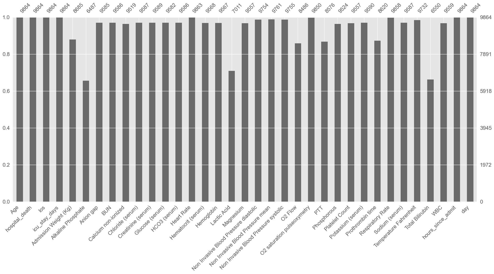
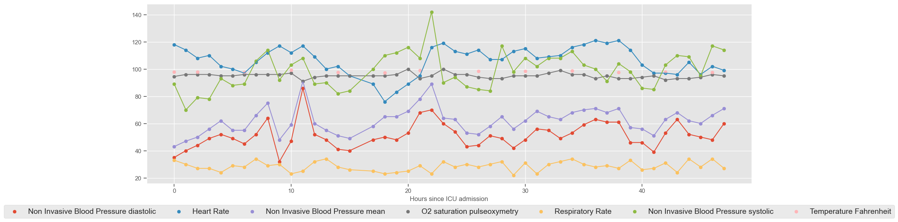

import numpy as np
import pandas as pd
import matplotlib.pyplot as plt
from IPython import display
import warnings
import seaborn as sns
import ehrapy as ep
import anndata as ad
plt.style.use("ggplot")
warnings.filterwarnings("ignore")
# Benchmark dataset creation
# https://github.com/YerevaNN/mimic3-benchmarks
#https://github.com/cmsalgado/book_chapter/blob/master/book_chapter.ipynbdf = pd.read_csv('notebooks/ehrapy_data/icd_chart_60filtered.csv.gz')df2 = pd.read_csv('notebooks/ehrapy_data/icu_stay_diag.csv.gz')cluster_df = pd.read_csv('notebooks/tables/leiden_clusters.csv')
cluster_df = cluster_df.reset_index()
df3 = df2.merge(cluster_df[["stay_id", "leiden_0_3", 'annotation']], on="stay_id")# Assuming your DataFrame is called df
wide_df = df.pivot_table(
index=["stay_id", "event_time_from_admit"],
columns="label",
values="valuenum",
aggfunc="first" # or "mean" if multiple values per label per time
).reset_index()# Create dictionaries for metadata (label → unit/category)
unit_lookup = df.dropna(subset=["unitname"]).drop_duplicates(subset=["label"])[["label", "unitname"]].set_index("label").to_dict()["unitname"]
category_lookup = df.drop_duplicates(subset=["label"])[["label", "category"]].set_index("label").to_dict()["category"]unit_lookup["Heart Rate"] # → 'bpm'
category_lookup["Respiratory Rate"] # → 'Respiratory''Respiratory'# Join on stay_id
merged_wide = df3.merge(wide_df, on="stay_id", how="left")# Step 1: Ensure it's timedelta
merged_wide["event_time_from_admit"] = pd.to_timedelta(merged_wide["event_time_from_admit"])
# Step 2: Convert to total hours
merged_wide["hours_since_admit"] = merged_wide["event_time_from_admit"].dt.total_seconds() / 3600
# Step 3: Clip negative values to 0
merged_wide["hours_since_admit"] = merged_wide["hours_since_admit"].clip(lower=0)
merged_wide["day"] = merged_wide["event_time_from_admit"].dt.days + 1merged_wide = merged_wide.drop(columns=["event_time_from_admit"])adata = ep.io.df_to_anndata(merged_wide,
index_column='stay_id',
columns_obs_only=['stay_id', 'subject_id', 'hadm_id', 'dod', 'intime', 'outtime', 'ALT', 'AST', 'ICD_J18', 'ICD_E87', 'ICD_I50', 'ICD_N17', 'ICD_J96', 'gender', 'insurance', 'ethnicity'])data = adata.to_df()
data.index = data.index.astype(int)print(f"Number of ICU stays: {str(len(data.index.unique()))}")
print(f"Number of survivors: {str(len(data[data['hospital_death']==0].index.unique()))}")
print(f"Number of non-survivors: {str(len(data[data['hospital_death']==1].index.unique()))}")
print(
f"Mortality: {str(round(100*len(data[data['hospital_death']==1].index.unique()) / len(data.index.unique()),1))}%"
)Number of ICU stays: 9864
Number of survivors: 8514
Number of non-survivors: 1350
Mortality: 13.7%ep.ad.infer_feature_types(adata)! Features 'hospital_death', 'BUN', 'Respiratory Rate' were detected as categorical features stored numerically.Please verify and correct using `ep.ad.replace_feature_types` if necessary.
Detected feature types for AnnData object
with 1981901 obs and 35 vars
├── 📅 Date features
├── 📐 Numerical features
│ ├── Admission Weight (Kg)
│ ├── Age
│ ├── Alkaline Phosphate
│ ├── Anion gap
│ ├── Calcium non-ionized
│ ├── Chloride (serum)
│ ├── Creatinine (serum)
│ ├── Glucose (serum)
│ ├── HCO3 (serum)
│ ├── Heart Rate
│ ├── Hematocrit (serum)
│ ├── Hemoglobin
│ ├── Lactic Acid
│ ├── Magnesium
│ ├── Non Invasive Blood Pressure diastolic
│ ├── Non Invasive Blood Pressure mean
│ ├── Non Invasive Blood Pressure systolic
│ ├── O2 Flow
│ ├── O2 saturation pulseoxymetry
│ ├── PTT
│ ├── Phosphorous
│ ├── Platelet Count
│ ├── Potassium (serum)
│ ├── Prothrombin time
│ ├── Sodium (serum)
│ ├── Temperature Fahrenheit
│ ├── Total Bilirubin
│ ├── WBC
│ ├── day
│ ├── hours_since_admit
│ ├── icu_stay_days
│ └── los
└── 🗂️ Categorical features
├── BUN (108 categories)
├── Respiratory Rate (35 categories)
└── hospital_death (2 categories)ep.ad.replace_feature_types(adata, ['BUN', 'Respiratory Rate'], 'numeric')#ep.ad.replace_feature_types(adata, ['stay_id'], 'categorical')stats = ep.pp.qc_metrics(adata)adata_per_patient = ep.ad.df_to_anndata(data.groupby(["stay_id"]).mean())
adata_per_patientAnnData object with n_obs × n_vars = 9864 × 35
layers: 'original'adata_per_patientAnnData object with n_obs × n_vars = 9864 × 35
layers: 'original'variables = [
'Alkaline Phosphate',
'Anion gap',
'BUN',
'Calcium non-ionized',
'Chloride (serum)',
'Creatinine (serum)',
'Glucose (serum)',
'HCO3 (serum)',
'Heart Rate',
'Hematocrit (serum)',
'Hemoglobin',
'Lactic Acid',
'Magnesium',
'Non Invasive Blood Pressure diastolic',
'Non Invasive Blood Pressure mean',
'Non Invasive Blood Pressure systolic',
'O2 Flow',
'O2 saturation pulseoxymetry',
'PTT',
'Phosphorous',
'Platelet Count',
'Potassium (serum)',
'Prothrombin time',
'Respiratory Rate',
'Sodium (serum)',
'Temperature Fahrenheit',
'Total Bilirubin',
'WBC',
]
variables_mort = variables.copy()
variables_mort.append("hospital_death")ep.pl.missing_values_barplot(adata_per_patient)
adata.obs["stay_id"] = adata.obs.indexep.pp.winsorize(adata)adata.describe()
adataAnnData object with n_obs × n_vars = 1981901 × 35
obs: 'subject_id', 'hadm_id', 'dod', 'intime', 'outtime', 'ALT', 'AST', 'ICD_J18', 'ICD_E87', 'ICD_I50', 'ICD_N17', 'ICD_J96', 'gender', 'insurance', 'ethnicity', 'missing_values_abs', 'missing_values_pct', 'stay_id'
var: 'feature_type', 'missing_values_abs', 'missing_values_pct', 'mean', 'median', 'standard_deviation', 'min', 'max', 'iqr_outliers'
layers: 'original'adata.obs["hour"] = np.floor(adata[:, "hours_since_admit"].X)
# Truncate everything beyond hour 47
adata = adata[adata.obs["hour"] < 48, :]data_median_hour = (
ep.ad.anndata_to_df(adata, obs_cols=["hour", "stay_id"])
.groupby(["stay_id", "hour"])[variables_mort]
.median()
)# adata.obs["hour"] = np.floor(adata[:, "hours_since_admit"].X)
# # data goes until h = 48, change 48 to 47
# adata.obs["hour"][adata.obs["hour"] == 48] = 47
# data_median_hour = (
# ep.ad.anndata_to_df(adata, obs_cols=["hour", "stay_id"])
# .groupby(["stay_id", "hour"])[variables_mort]
# .median()
# )The ‘groupby’ will create as many indexes as groups defined. In order to facilitate the next operations, a single index is desirable. In the next example, the second index (column ‘hour’) is excluded and kept as a DataFrame column. Note that the first index corresponds to level 0 and second index to level 1. Therefore, in order to exclude the second index and keep it as a column, ‘level’ should be set to 1 and ‘drop’ to False.
data_median_hour = data_median_hour.reset_index(level=(1), drop=False)data_median_hour| hour | Alkaline Phosphate | Anion gap | BUN | Calcium non-ionized | Chloride (serum) | Creatinine (serum) | Glucose (serum) | HCO3 (serum) | Heart Rate | ... | Phosphorous | Platelet Count | Potassium (serum) | Prothrombin time | Respiratory Rate | Sodium (serum) | Temperature Fahrenheit | Total Bilirubin | WBC | hospital_death | |
|---|---|---|---|---|---|---|---|---|---|---|---|---|---|---|---|---|---|---|---|---|---|
| stay_id | |||||||||||||||||||||
| 30000484 | 0.0 | NaN | NaN | NaN | NaN | NaN | NaN | NaN | NaN | NaN | ... | NaN | NaN | NaN | 14.8 | NaN | NaN | NaN | NaN | NaN | 0.0 |
| 30000484 | 1.0 | NaN | NaN | NaN | NaN | NaN | NaN | NaN | NaN | 102.5 | ... | NaN | NaN | NaN | NaN | 19.0 | NaN | 96.000000 | NaN | NaN | 0.0 |
| 30000484 | 2.0 | NaN | NaN | NaN | NaN | NaN | NaN | NaN | NaN | 88.0 | ... | NaN | NaN | NaN | NaN | 14.0 | NaN | NaN | NaN | NaN | 0.0 |
| 30000484 | 3.0 | NaN | NaN | NaN | NaN | NaN | NaN | NaN | NaN | 87.0 | ... | NaN | NaN | NaN | NaN | 13.0 | NaN | NaN | NaN | NaN | 0.0 |
| 30000484 | 4.0 | NaN | NaN | NaN | NaN | NaN | NaN | NaN | NaN | 92.0 | ... | NaN | NaN | NaN | NaN | 18.0 | NaN | NaN | NaN | NaN | 0.0 |
| ... | ... | ... | ... | ... | ... | ... | ... | ... | ... | ... | ... | ... | ... | ... | ... | ... | ... | ... | ... | ... | ... |
| 39999230 | 42.0 | NaN | NaN | NaN | NaN | NaN | NaN | NaN | NaN | 94.0 | ... | NaN | NaN | NaN | NaN | 28.0 | NaN | NaN | NaN | NaN | 0.0 |
| 39999230 | 44.0 | NaN | NaN | NaN | NaN | NaN | NaN | NaN | NaN | 98.0 | ... | NaN | NaN | NaN | NaN | 30.0 | NaN | NaN | NaN | NaN | 0.0 |
| 39999230 | 45.0 | NaN | NaN | NaN | NaN | NaN | NaN | NaN | NaN | 97.0 | ... | NaN | NaN | NaN | NaN | 29.0 | NaN | 97.000000 | NaN | NaN | 0.0 |
| 39999230 | 46.0 | NaN | NaN | NaN | NaN | NaN | NaN | NaN | NaN | 94.5 | ... | NaN | NaN | NaN | NaN | 24.5 | NaN | 98.150002 | NaN | NaN | 0.0 |
| 39999230 | 47.0 | NaN | NaN | NaN | NaN | NaN | NaN | NaN | NaN | 94.0 | ... | NaN | NaN | NaN | NaN | 25.0 | NaN | NaN | NaN | NaN | 0.0 |
387646 rows × 30 columns
data_median_hour.index = data_median_hour.index.astype(int)# Check the type of index
print(data_median_hour.index.dtype)int32print(type(ICUstayID))<class 'int'>print(data_median_hour["hour"].dtype)float32data_median_hour["hour"] = pd.to_numeric(data_median_hour["hour"], errors="coerce")print(data_median_hour["hour"].dtype)float32vitals = [
"Non Invasive Blood Pressure diastolic",
"Heart Rate",
"Non Invasive Blood Pressure mean",
"O2 saturation pulseoxymetry",
"Respiratory Rate",
"Non Invasive Blood Pressure systolic",
"Temperature Fahrenheit",
]
ICUstayID = 30005362
fig, ax = plt.subplots(figsize=(20, 6))
# scatter plot
for col in vitals:
ax.scatter(
data_median_hour.loc[ICUstayID, "hour"], data_median_hour.loc[ICUstayID, col]
)
plt.legend(
vitals, loc=9, bbox_to_anchor=(0.5, -0.1), ncol=len(vitals), prop={"size": 14}
)
#plt.xticks(np.arange(0, 49, step=1))
plt.xlabel("Hours since ICU admission")
# connect consecutive points by line
for col in vitals:
ax.plot(
data_median_hour.loc[ICUstayID, "hour"], data_median_hour.loc[ICUstayID, col]
)
cluster_df = pd.read_csv('notebooks/tables/leiden_clusters.csv')data_median_hour = data_median_hour.reset_index()
data_median_hour = data_median_hour.merge(cluster_df[["stay_id", "leiden_0_3", 'annotation']], on="stay_id")import seaborn as sns
import matplotlib.pyplot as plt
def plot_cluster_trajectories(df, value_cols, group_col="annotation"):
for var in value_cols:
plt.figure(figsize=(8, 4))
sns.lineplot(
data=df.groupby([group_col, "hour"])[var].median().reset_index(),
x="hour", y=var, hue=group_col, palette="tab10"
)
plt.title(f"{var} over time by {group_col}")
plt.xlabel("Hours since ICU admission")
plt.ylabel(var)
plt.legend(title=group_col, bbox_to_anchor=(1.05, 1), loc='upper left')
plt.tight_layout()
plt.show()plot_cluster_trajectories(data_median_hour, variables_mort, group_col="annotation")# If not already in .obs
adata.obs["hospital_death"] = adata.obs["hospital_death"].astype(int)
adata.obs["annotation"] = adata.obs["annotation"].astype("category")sns.set(style="ticks")
g = sns.pairplot(
data_median_hour[variables_mort].dropna(axis=0, how="any"),
vars=variables,
hue="hospital_death",
)
# hide the upper triangle
for i, j in zip(*np.triu_indices_from(g.axes, 1)):
g.axes[i, j].set_visible(False)
plt.show()
# change back to our preferred style
plt.style.use("ggplot")def feat_transf(data):
data_max = data.groupby(["stay_id"])[variables].max()
data_max.columns = ["max " + str(col) for col in data_max.columns]
data_min = data.groupby(["stay_id"])[variables].min()
data_min.columns = ["min " + str(col) for col in data_min.columns]
data_sd = data.groupby(["stay_id"])[variables].std()
data_sd.columns = ["sd " + str(col) for col in data_sd.columns]
data_mean = data.groupby(["stay_id"])[variables].mean()
data_mean.columns = ["mean " + str(col) for col in data_mean.columns]
data_agg = pd.concat([data_min, data_max, data_sd, data_mean], axis=1)
return data_agg
data_transf = feat_transf(data_median_hour).dropna(axis=0)
print("Extracted features: ")
display.display(data_transf.columns)
print("")
print(f"Number of ICU stays: {str(data_transf.shape[0])}")
print(f"Number of features: {str(data_transf.shape[1])}")Extracted features: Index(['min Alkaline Phosphate', 'min Anion gap',
'min BUN', 'min Calcium non-ionized',
'min Chloride (serum)', 'min Creatinine (serum)',
'min Glucose (serum)', 'min HCO3 (serum)',
'min Heart Rate', 'min Hematocrit (serum)',
...
'mean PTT', 'mean Phosphorous',
'mean Platelet Count', 'mean Potassium (serum)',
'mean Prothrombin time', 'mean Respiratory Rate',
'mean Sodium (serum)',
'mean Temperature Fahrenheit',
'mean Total Bilirubin', 'mean WBC'],
dtype='object', length=112)
Number of ICU stays: 961
Number of features: 112mortality = data.loc[data_transf.index]["hospital_death"].groupby(["stay_id"]).mean()
age = data.loc[data_transf.index]["Age"].groupby(["stay_id"]).mean()
#gender = data.loc[data_transf.index]["gender"].groupby(["stay_id"]).mean()
cluster = data.loc[data_transf.index]["annotation"].groupby(["stay_id"]).mean()
data_transf_inv = pd.concat([data_transf, age, cluster, mortality], axis=1).dropna(
axis=0
)
print(f"Number of ICU stays: {str(data_transf_inv.shape[0])}")
print(f"Number of features: {str(data_transf_inv.shape[1])}")------------------------------------------------------------ KeyError Traceback (most recent call last) File c:\Users\Shauna\Documents\MIMIC-FINAL\.venv\Lib\site-packages\pandas\core\indexes\base.py:3805, in Index.get_loc(self, key) 3804 try: -> 3805 return self._engine.get_loc(casted_key) 3806 except KeyError as err: File index.pyx:167, in pandas._libs.index.IndexEngine.get_loc() File index.pyx:196, in pandas._libs.index.IndexEngine.get_loc() File pandas\\_libs\\hashtable_class_helper.pxi:7081, in pandas._libs.hashtable.PyObjectHashTable.get_item() File pandas\\_libs\\hashtable_class_helper.pxi:7089, in pandas._libs.hashtable.PyObjectHashTable.get_item() KeyError: 'annotation' The above exception was the direct cause of the following exception: KeyError Traceback (most recent call last) Cell In[157], line 4 2 age = data.loc[data_transf.index]["Age"].groupby(["stay_id"]).mean() 3 #gender = data.loc[data_transf.index]["gender"].groupby(["stay_id"]).mean() ----> 4 cluster = data.loc[data_transf.index]["annotation"].groupby(["stay_id"]).mean() 6 data_transf_inv = pd.concat([data_transf, age, cluster, mortality], axis=1).dropna( 7 axis=0 8 ) 9 print(f"Number of ICU stays: {str(data_transf_inv.shape[0])}") File c:\Users\Shauna\Documents\MIMIC-FINAL\.venv\Lib\site-packages\pandas\core\frame.py:4102, in DataFrame.__getitem__(self, key) 4100 if self.columns.nlevels > 1: 4101 return self._getitem_multilevel(key) -> 4102 indexer = self.columns.get_loc(key) 4103 if is_integer(indexer): 4104 indexer = [indexer] File c:\Users\Shauna\Documents\MIMIC-FINAL\.venv\Lib\site-packages\pandas\core\indexes\base.py:3812, in Index.get_loc(self, key) 3807 if isinstance(casted_key, slice) or ( 3808 isinstance(casted_key, abc.Iterable) 3809 and any(isinstance(x, slice) for x in casted_key) 3810 ): 3811 raise InvalidIndexError(key) -> 3812 raise KeyError(key) from err 3813 except TypeError: 3814 # If we have a listlike key, _check_indexing_error will raise 3815 # InvalidIndexError. Otherwise we fall through and re-raise 3816 # the TypeError. 3817 self._check_indexing_error(key) KeyError: 'annotation'
min_num_meas = 2
def extr_min_num_meas(data_median_hour, min_num_meas):
"""Select ICU stays where there are at least 'min_num_meas' observations
and print the resulting DataFrame size"""
data_count = data_median_hour.groupby(["icustay"])[variables_mort].count()
for col in data_count:
data_count[col] = data_count[col].apply(
lambda x: np.nan if x < min_num_meas else x
)
data_count = data_count.dropna(axis=0, how="any")
print(f"Number of ICU stays: {str(data_count.shape[0])}")
print(f"Number of features: {str(data_count.shape[1])}")
unique_stays = data_count.index.unique()
data_median_hour = data_median_hour.loc[unique_stays]
return data_median_hour
data_median_hour = extr_min_num_meas(data_median_hour, min_num_meas)data = adata.to_df()
data.index = data.index.astype(int)ep.pp.summarize_measurements(adata)# Drop 'hours_since_admit' from .X if it's there
if "hours_since_admit" in adata.var_names:
adata = adata[:, ~adata.var_names.isin(["hours_since_admit"])].copy()
# Floor the hour column and set it cleanly
adata.obs["hour"] = np.floor(adata.obs["hours_since_admit"]).astype(int)
adata.obs.loc[adata.obs["hour"] == 48, "hour"] = 47
# Now safely convert to DataFrame
df = ep.ad.anndata_to_df(adata, obs_cols=["hour", "stay_id"])
# Sanity check types
df["hour"] = df["hour"].astype(int)
df["stay_id"] = df["stay_id"].astype(str)
# Group by hour and stay_id
data_median_hour = df.groupby(["stay_id", "hour"])[variables_mort].median().reset_index()